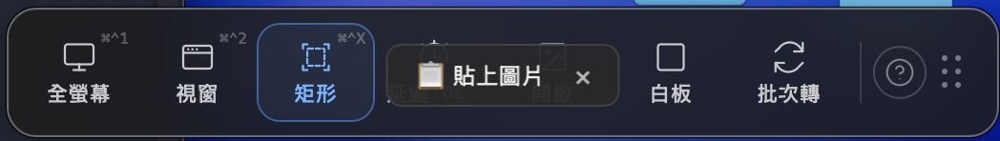

跳到 · Jump to
Welcome on Board
第一次打開 VAS
從 App Store 下載安裝後打開 VAS，你會看到桌面上有一排嶄新的浮動工具列——VAS 住在 macOS 選單列上，以一個瓶子的形狀出現在你螢幕右上角。

但他同時也可以停駐在你的桌面上，任你拖動。呼吸燈模式預設為關閉，請到工具列「快捷鍵說明」內手動開啟。
打開「呼吸燈」模式後，桌面上會多一條很低調的光——120×6px 的一條光，待在桌面邊角。它可能不明顯，那是刻意的；VAS 要的是「你需要它的時候它就在」，不是「打開就佔你一整片桌面」。
到選單列點一下瓶子（左鍵），可以顯示或隱藏桌面上的工具列——如果你是桌面潔癖患者，隱藏就好，VAS 依然會在選單列待命。
授權與隱私
VAS 第一次截圖時會請求 macOS 的螢幕錄製權限——這是 macOS 對所有截圖類工具的規定，不可省略。
所有截到的圖片、OCR 辨識出的文字、QR Code 的內容，完全在你的電腦本機處理——不上傳、不分析、不訓練。VAS 沒有伺服器來接收你的資料。
如果第一次使用時沒授權，之後 VAS 會跳出系統提示請你去「系統設定 → 隱私權與安全性 → 螢幕錄製」裡手動開啟。給完權限後重新開啟 VAS 就可以了。
第一次截圖
按 Dock 上的 VAS 圖示，或點選單列的瓶子——不管 VAS 原本在哪，它會被「召喚」到你眼前，展開成完整的工具列。
選一個截圖模式（全螢幕 ⌘^1、視窗 ⌘^2、矩形 ⌘^X），框出你要的畫面——VAS 會立刻把它丟進編輯器，並在背景跑完 OCR。文字辨識完成後會自動複製到剪貼簿，你只要⌘V 就能把辨識到的文字貼到任何地方。
編輯完，用「拖曳匯出」拖出去給任何視窗或文件。三秒內結束。
呼吸燈與召喚
當你不用 VAS 的時候，工具列會縮成一條 120×6px 的光——呼吸燈。低調、不擋事，但它一直在感知你。
三種情境會觸發呼吸燈：
- 拖檔案靠近——工具列像捕蠅草一樣張開，接住你拖過來的圖。放開的瞬間，圖直接進編輯器；如果你剛剛還在編輯別的東西，它會收納那張、直接展開編輯器繼續。
- 複製網址靠近——呼吸燈張開，跳出 toast：「檢測到 ⟨網址⟩—點擊開始截圖」。點一下就開始網頁截圖流程。
- 從瀏覽器複製圖片——跳出 toast 問你「貼上圖片」，你說好就直接進去。

如果你把 VAS 放在桌面某個角落後忘了它在哪——呼吸燈真的很低調——按 Dock 上的 VAS 圖示，不管它在哪裡，都會展開成工具列狀態等你過去。
工具列
懸浮在桌面上的截圖與工具入口

編輯器
截完圖後進的第二個主要空間。編輯器分為四個操作區域：

- 主要功能選單——左側垂直工具列。點選工具後，畫布上的操作會對應切換。目前使用中的工具以藍色高亮標示。
- 子屬性調整選單——頂部工具列。依所選工具動態更換內容，可調整顏色、粗細、不透明度、線條樣式等屬性。
- 動態匯出按鈕——右下角浮動按鈕。可拖曳移動位置，對應左右撇子不同使用習慣。完成後拖曳至目標應用程式即可匯出。
- 狀態列與磁吸工具開關——左下角狀態列。顯示目前縮放比例與畫布尺寸，並提供磁吸對齊開關。
標注工具分七組：選取、繪圖、標注、隱私與遮蔽、畫布操作、版面功能、其他。

匯出
編輯完了，VAS 給你四條出口：
- Drag out——直接從編輯器拖到 Finder、Slack、任何一個接受檔案的 App。不儲存、不彈視窗、就是拖。
- 複製到剪貼簿——按 ⌘C，圖片進剪貼簿，到別的地方按 ⌘V 貼上。
- ShareSheet——macOS 原生分享面板，轉給 AirDrop、訊息、郵件。
- 存檔——儲存成 JPG／PNG／WebP／GIF／BMP／TIFF／PDF。
OCR 與 QR Code
截圖完成的同時，VAS 在背景跑兩件事——文字辨識與 QR Code 掃描。兩件事都不上雲。
OCR · 文字辨識
辨識出的文字預設直接放進剪貼簿，截完圖 ⌘V 就能貼到任何地方。針對當前支援的語言市場，OCR 會做在地隱私遮蔽特化——譬如會認得當地的身分證號、信用卡號、電話格式，辨識時做對應處理。
OCR 是 VAS 的內建功能不提供關閉選項——但它永遠只在你本機跑，不用的話忽略就好。
QR Code · 掃描
VAS 根據 QR Code 在畫面中的佔比決定行為：
- 框得完整——判定為你主動想掃，直接跳轉到對應連結。
- 框得鬆（部分包含）——先問你一聲「要跳轉嗎？」。
- 完全是背景元素——不做任何動作，直接截圖進編輯器。
快捷鍵
編輯器內建快捷鍵一覽，分四組：
工具切換
| 選取工具 | V |
| 框型選取 | M |
| 筆型工具 | P |
| 線條工具 | L |
| 矩形框 | R |
| 色塊 | B |
| 文字工具 | T |
| 編號標記 | N |
| 符號印章 | U |
| 馬賽克／模糊 | X |
| OCR 文字辨識 | G |
| 隱私遮蔽 | K |
| 裁切 | C |
| 調整大小 | S |
| 延伸畫布 | E |
| 疊入圖片 | O |
畫布操作
| 放大 | ⌘ = |
| 縮小 | ⌘ - |
| 適合視窗 | ⌘ 0 |
| 平移畫布 | Space ＋ 拖曳 |
| 切換磁吸對齊 | \ |
編輯
| 撤銷 | ⌘ Z |
| 重做 | ⌘ ⇧ Z |
| 複製 | ⌘ C |
| 貼上 | ⌘ V |
| 複製最終影像 | ⌘ ⇧ C |
| 全選 | ⌘ A |
| 刪除選取物件 | Delete / ⌫ |
物件操作
| 15° 鎖定旋轉 | Shift ＋ 旋轉 |
| 等比縮放 | Shift ＋ 拖曳角落 |
| 跳過磁吸 | Alt ＋ 拖曳 |
| 微調 1 px | ← → ↑ ↓ |
| 微調 10 px | Shift ＋ ← → ↑ ↓ |
| 結束折線繪製 | Double-click |
全域截圖快捷鍵出廠預設關閉，避免與你系統裡其他 App 衝突。開啟方式：工具列 →「快捷鍵說明」→ 手動開啟。付費版另外提供完全自訂——每一組快捷鍵都可以改成你習慣的組合。
自訂設定
VAS 刻意做得不多設定項，因為我們相信好的工具預設就是對的。能調的幾項是：
- 桌面工具列顯示／隱藏——選單列左鍵瓶子即可切換。
- 呼吸燈開關——出廠預設關閉，工具列的「快捷鍵說明」裡可手動開啟。
- 全域快捷鍵開關——出廠預設關閉，工具列的「快捷鍵說明」裡可手動開啟。
- 自訂快捷鍵 PRO——付費版可把任一快捷鍵改成你慣用的組合。
- OCR 語言——目前跟隨系統語言特化當地隱私遮蔽相關規則。